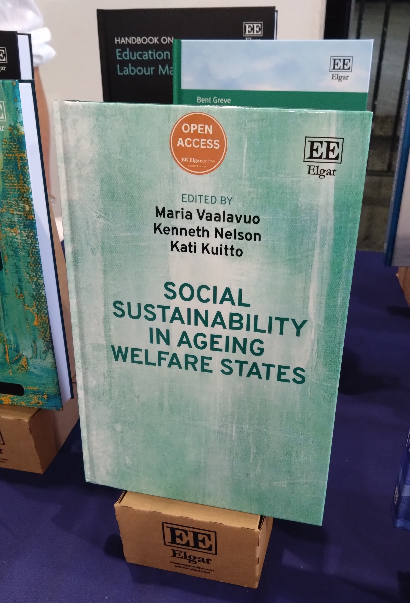

I’m senior researcher at the Finnish Institute for Health and Welfare and visiting researcher at the INVEST Research Centre , University of Turku & Statistics Finland. I gained my PhD in Economics at the University of Turku, Finland. My research interests is often related to using welfare responses to exposure to different life events such as health shocks, warfare, migration, job loss and (grand)parenthood. I enjoy interdisciplinary collaboration and often work in the intersection of epidemiology, sociology, social policy and economics. I mainly apply quantitative methods to longitudinal register data, especially quasi-experimental methods. I teach Causal inference in healthcare course at the Turku School of Economics in University of Turku together with Mika Kortelainen. I'm also the chair of Finnish Health Economics Seminar Series, a monthly webinar series in health economics and vice chair of Finnish Society for Health Economics
Recent WP: Parental Job Loss and Children's Socioeconomic Disadvantage (with Kenneth Nelson and Kati Kuitto)
Using high-quality administrative data, we study how parental labor market shocks affect children's socioeconomic disadvantage. We find that the job loss of both fathers and mothers significantly increases the likelihood that children will experience a range of socioeconomic disadvantage indicators in adulthood, including being not in education, employment, or training (NEET), reliance on social assistance, and the use of unemployment benefits. In relative terms, we find that parental job loss increases children’s risk of socioeconomic disadvantage by up to 3.4\% following fathers’ job loss and up to 3.8\% following mothers’ job loss. These effects persist for more than a decade after parental job displacement. The adverse impacts are particularly pronounced for boys and children exposed at older ages, suggesting heterogeneous vulnerability based on gender and developmental stage. Our results indicate that good labor market conditions -- particularly in the case of fathers -- may mitigate the adverse effects of parental job loss.
Most recent publication
- Böckerman, P., Kortelainen, M., Salokangas, H., Vaalavuo, M. (2025). A family affair? Long-term economic and mental health effects of spousal cancer. Journal of Population Economics. Read online